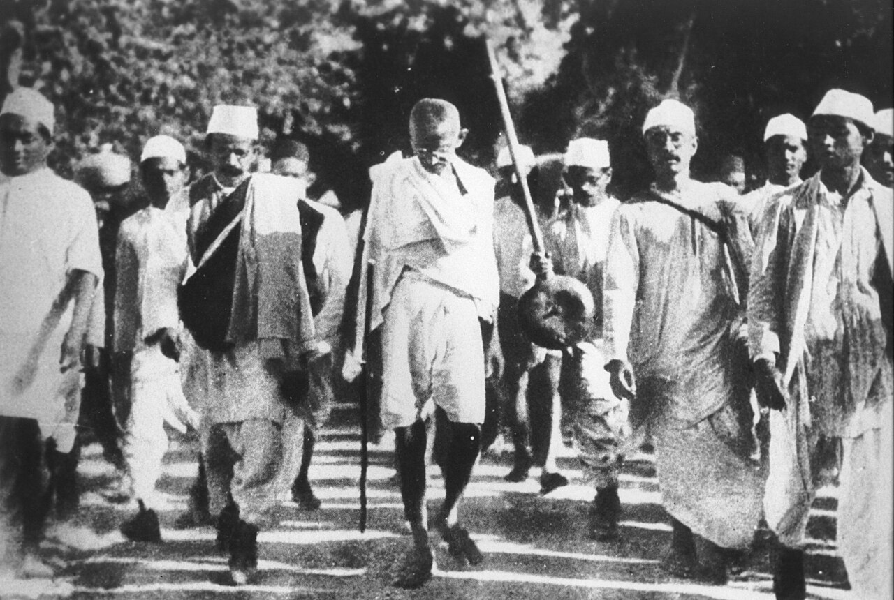
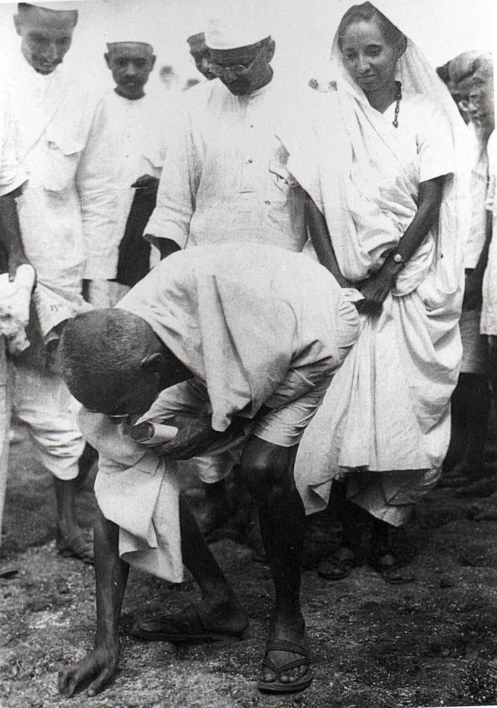

History · Freedom
The History of Sovereignty: From 1857 to Freedom

We inherit our freedom so completely that it is easy to forget it was ever in doubt. But India's sovereignty was not a gift handed down — it was won, inch by inch and life by life, across a century of struggle and then defended in war after war.
My poem The History of Sovereignty tries to trace that whole arc, "from fields of indigo to rivers of salt," and this article walks the same road.
The first spark: 1857
The poem begins where the modern struggle did: "The cry of 1857 shook the crown, a rebellion born, though beaten down." The revolt of 1857 — often called the First War of Independence — was crushed, but it planted a seed. "The seed was sown in blood and dust, a future forged by undying trust."[1]
No swords were drawn, yet battles were won, a land reclaimed beneath the sun.
The march to freedom

Over the following decades, the freedom movement grew — through protest, sacrifice and an extraordinary experiment in non-violence. The poem marks its most iconic moment: "Salt marched to freedom, a vision anew" — the Salt March of 1930, when a simple act of making salt became a challenge to an empire.[1]
Freedom came in 1947 — but "freedom's birth came cloaked in pain, Partition's wound, a bloody stain." The same year that brought independence brought one of history's great human tragedies, a division that scarred millions. Sovereignty's first cost was paid before the new nation had even drawn breath.
Defended in war
Independence did not end the struggle; it changed its form. The poem moves on through the wars that followed: "The mountains echoed in '62's frost," then "in '71, a nation was born anew," and "valor etched on Kargil's hill." Freedom, once won, had to be defended again and again by the armed forces.

This is the thread that ties my whole book to this single poem: the freedom of 1947 and the sacrifices on Kargil's peaks are not separate stories. They are one long, unbroken act of guarding the same dream.
A privilege borne from sacrifice
Sovereignty, the poem concludes, "is a privilege borne from ultimate sacrifices." It is not the natural state of things; it is an achievement, perpetually maintained. Every freedom we enjoy — to speak, to vote, to walk safely home — rests on a foundation laid by people who gave everything and asked for nothing.
To know that history is itself a kind of patriotism. The least we owe the freedom fighters of 1857 and the soldiers of Kargil alike is to remember that our ordinary, peaceful lives are the very thing they were fighting for — and to live them in a way worthy of the price.
Sources & further reading
All images via Wikimedia Commons, used under the licences shown in each caption.